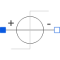

StepVoltageStep voltage source |

|
Diagram
{kind=link}
Information
This information is part of the Modelica Standard Library maintained by the Modelica Association.
This voltage source uses the corresponding signal source of the Modelica.Blocks.Sources package. Care for the meaning of the parameters in the Blocks package. Furthermore, an offset parameter is introduced, which is added to the value calculated by the blocks source. The startTime parameter allows to shift the blocks source behavior on the time axis.
Parameters (3)
Connectors (2)
| p |
Type: PositivePin Description: Positive electrical pin |
|
|---|---|---|
| n |
Type: NegativePin Description: Negative electrical pin |
Components (1)
| signalSource |
Type: Step |
|---|
Used in Examples (6)
|
Modelica.Electrical.Analog.Examples
Cauer low pass filter with analog components |
|
|
Modelica.Electrical.Analog.Examples
Cauer low pass filter with operational amplifiers |
|
|
Modelica.Electrical.Analog.Examples
Cauer low-pass filter with operational amplifiers and switched capacitors |
|
|
Modelica.Magnetic.FluxTubes.Examples.MovingCoilActuator
Armature stroke of both moving coil actuator models after a voltage step at time t=0 |
|
|
Modelica.Magnetic.FluxTubes.Examples.SolenoidActuator
Slow forced armature motion of both solenoid models so that electromagnetic field and current are quasi-stationary |
|
|
Modelica.Magnetic.FluxTubes.Examples.SolenoidActuator
Pull-in stroke of both solenoid models after a voltage step at time t=0 |